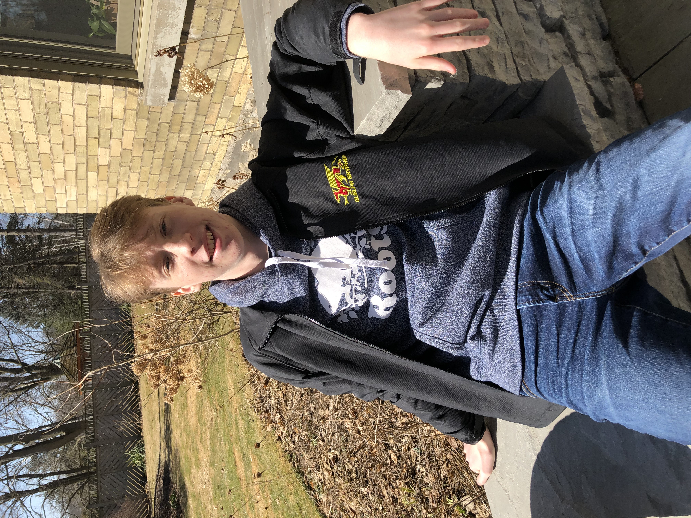

About Me

In a few months, I will be graduating from CCVI and starting my next life adventure, Computer Engineering, at university.
Computer Engineering combines my passion for problem-solving using programming with hands-on designing and building my ideas. As side projects,
I enjoy programming with Java and have mastered Python to win the Calysto Hackathon. Inspired by the COVID vaccine storage concerns,
my recent engineering prototype is a desktop fridge made from recycled materials that an Arduino regulates. Ultimately, my goal is to
combine my passions and education to become a founding member of a start-up providing technology that can improve society.
1 / 5

Having played rep hockey for the last ten years taught me how effective communication and teamwork could achieve any goal.
Highlights of my years include winning the OMHA championship and the International Silver Stick championship.
2 / 5

Link Crew was my chance to give back to my high school as a mentor to the
incoming grade nines by hosting social events, tutoring, and just being a friend to
talk to.
3 / 5

Joining DECA originally was a grade nine adventure
that initially did not go as planned as I had no business experience.
I committed to improving, and since then, I have been rewarded with awards
of Top 10 written exams in the oral category and provincial invites.
My most recent DECA experience in November was a Top 20 Ontario finish at Regionals.
DECA orals have developed my on-spot problem-solving skills and my ability
to communicate concisely under time constraints.
4 / 5

In Grade 10, I was the team lead in the Science Olympics team representing CCVI.
We finished first place in our local event and at U of G. For me, science and math is such an enriching and fun experience that everyone should have the opportunity to participate.
In May, I have the chance to share my passion with my peers by coordinating the local Science Olympics.
5 / 5

Caption Three
❮
❯